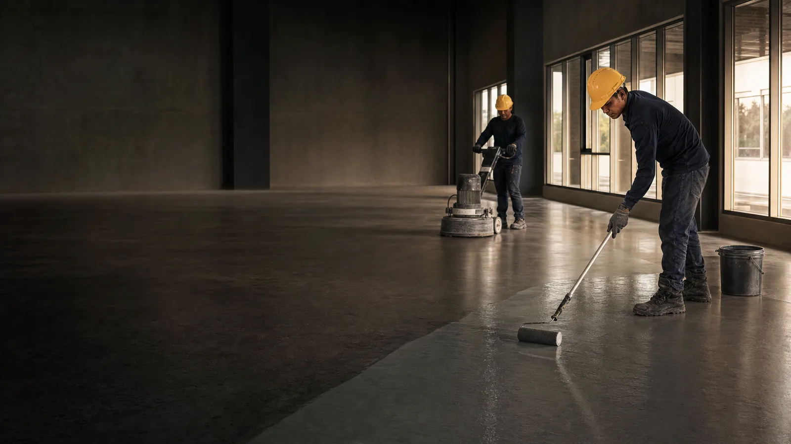
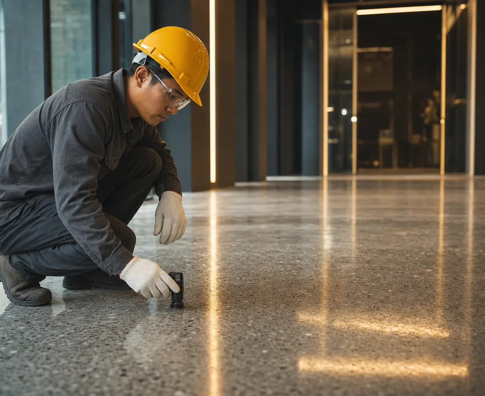
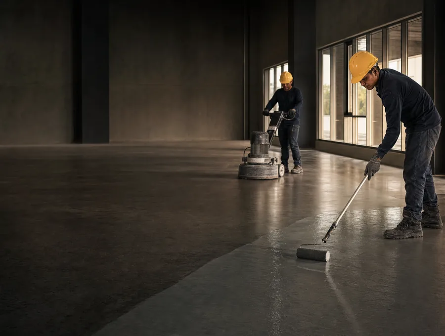
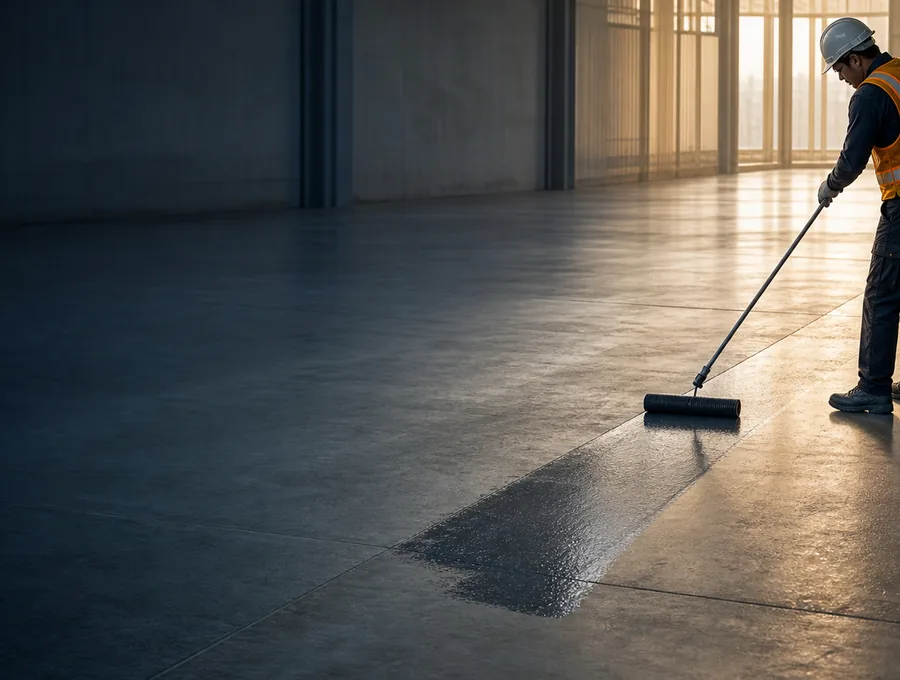
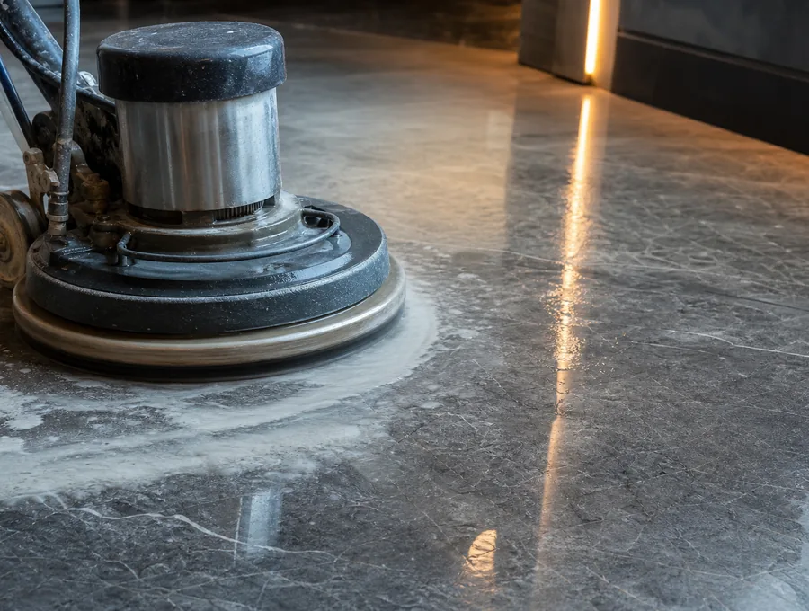
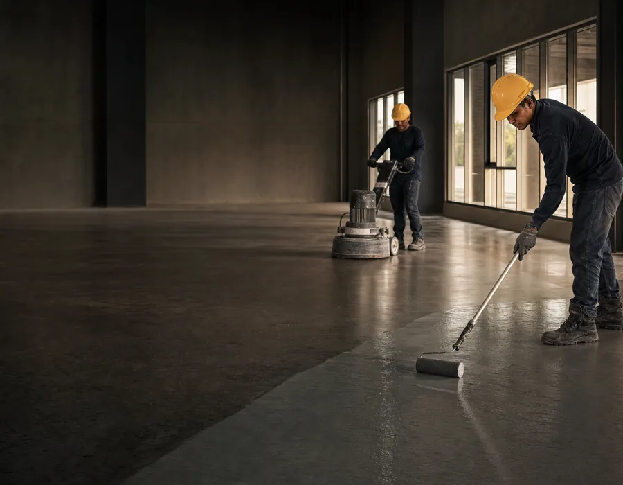
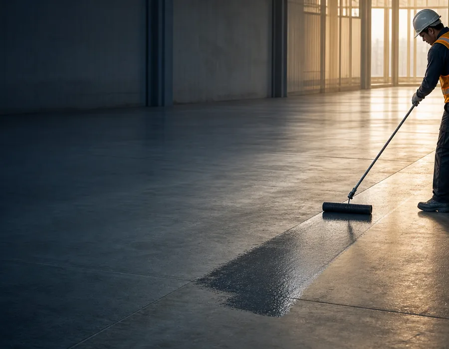
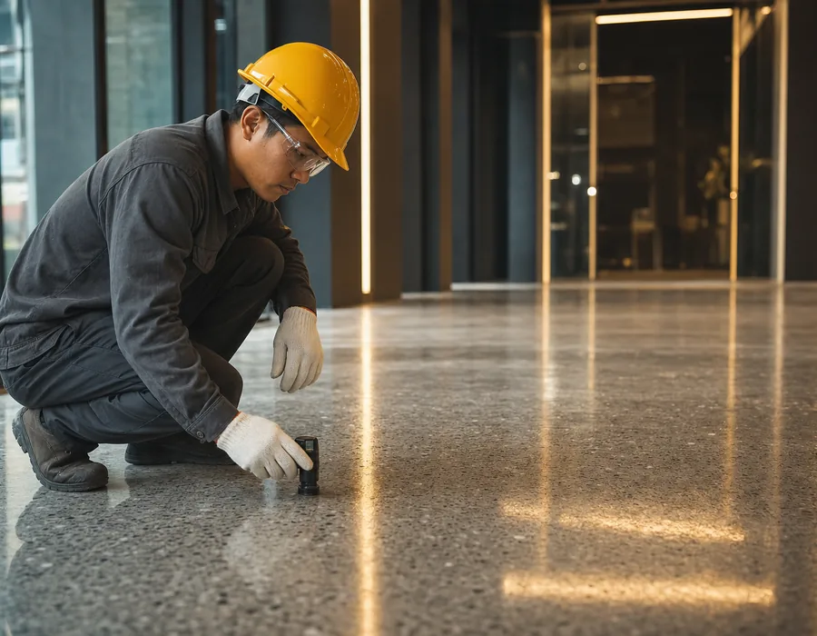
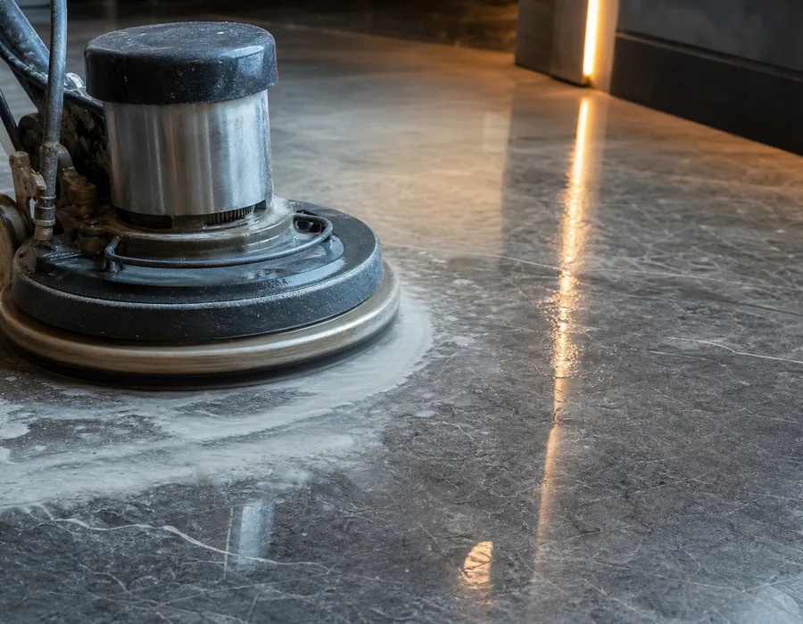

Surface Preparation
Creating the right foundation for coatings, finishes and protection systems.
Learn more →
Surface solutions in Cambodia
ROCKRETE provides professional surface preparation, floor finishing, stone polishing, and waterproofing solutions for commercial, industrial, and residential projects.
Creating the right foundation for coatings, finishes and protection systems.
Learn more →Practical finishes designed to improve the appearance and performance of floors.
Learn more →Careful polishing for a cleaner, more refined stone surface.
Learn more →Selected protection solutions for areas exposed to water penetration.
Learn more →
About ROCKRETE
ROCKRETE (CAMBODIA) CO., LTD provides specialized surface-treatment and protection services for projects in Cambodia. We focus on proper preparation, quality finishing, professional stone care, and dependable waterproofing solutions.
Our expertise
Specialized support for surface performance, refinement and protection.

Preparation of concrete and other surfaces before the application of coatings, finishes, or waterproofing systems.

Professional floor-finishing solutions designed to improve appearance, durability, and long-term surface performance.

Stone surface polishing and care to restore appearance and provide a cleaner, more refined finish.

Waterproofing solutions intended to help protect selected building areas and surfaces from water penetration.
Why ROCKRETE
Focused services for the specific surface needs of your project.
Careful attention to preparation, application and finishing.
Solutions considered around the conditions and needs of the site.
Clear, professional contact from inquiry through project discussions.
How we work
The exact process depends on your project requirements. We begin by understanding the surface and the intended result.
Tell us about your project requirements.
Review the surface and project context.
Discuss a practical direction for the work.
Coordinate work with your approved scope.
Selected capabilities

Surface Preparation Work Floor Finishing Project
Floor Finishing Project Stone Polishing Work
Stone Polishing Work
Waterproofing Application
Commercial Surface Project
Residential Surface ProjectFocused on surface treatment and protection.
Practical help for your project discussion.
Available for projects in Cambodia.
Contact & location
Contact our team to discuss your requirements.